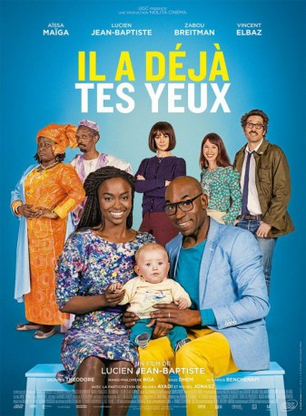
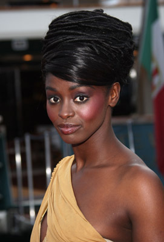
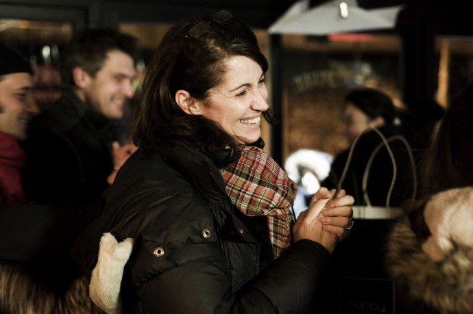

#7662 Zum Verwechseln ähnlich
 
 IMDB-Wertung: 6.1 / 10
IMDB-Wertung: 6.1 / 10  Metascore: 0
Metascore: 0 
Paul is married to Sali. Everything would be fine if they could get a child. Until the day when Sali receives the call that they have been waiting for so long: their adoption file is approved. He is adorable, he is 6 months old, his name is Benjamin. He is blond with blue eyes and white. They - are black.
Jahr: 2016
Dauer: 95 Minuten
FSK: 0
Land: Frankreich Studio: Neue Visionen FilmverleihTonspuren: DTS - ,
Untertitel: Deutsch,
Auflösung: 1080p (1920x800) Größe: 5304 MB
Genre: Komödie
Regisseur: Lucien Jean-Baptiste
Drehbuch: Alex Merkin
Soundtrack:
Darsteller:
-  Aïssa Maïga als Salimata Aloka
-  Zabou Breitman als Claire Mallet
- Guillaume Faure als Mathias
- Lucien Jean-Baptiste als Paul Aloka
- Vincent Elbaz als Manu
- Michel Jonasz als Monsieur Vidal
- Naidra Ayadi als Anna, pouponnière
- Marie-Philomène Nga als Mamita, la mère de Sali
- Bass Dhem als Ousmane, le père de Sali
- Delphine Théodore als Prune
- Marius Benchenafi als Benjamin, 4 mois
- Mathéo Perard als Benjamin, 1 an
- Valérie Moreau als Madame Perez
- Grégoire Bonnet als Baptiste Mallet
- Sara Mortensen als Kristina
- Maïmouna Gueye als Madame Diop
- Sabine Pakora als Madame Diakité
- Marie-Sohna Condé als Fatou
- Mariam Kaba als Madame Cissé
- Leontina Fall als L'autre nounou
- Yanig Samot als Grossiste Rungis
- Sylvestre Amoussou als Ami Ousmane
- Laurence Oltuski als Pédiatre
- Ronsha La Meute als Policier antillais
- Jean Fornerod als Policier blanc
- Yann Papin als Policier commissariat
- Guillaume Turin als Directeur hôpital
- Moanna Ferré als INfirmière
- Gunther Germain als Vigile hôpital
- Abdelhamid Aktouche als Agent de maintenance
- Herrade Von Meier als Secrétaire A.S.E.
- Patrick Mimoun als Membre conseil 1
- Sandrine Bodenes als Membre conseil 2
- Christophe Favre als Membre conseil 3
- Sasha Crapanzano als Fille Mme Mallet
- Jessica Tougloh als Nounou square
- François-Marie Nivon als Buraliste chinois
- Khaira Mahmoudi als Voisine hall Mamita
- Cédric Bouvier als Barman Restaurant
- Charlotte Le Douarec als Doublure Benjamin 6 mois
- Eva Krysthal als Doublure Benjamin 6 mois
- Gabriel Caffe als Doublure Benjamin 1 an
- Othniel Lefebvre als Gaspard
- Emilie Debranche als Fillette boutique
- Eden Jean-Baptiste als Fillette boutique
- Aurélien Debranche als Enfant square
- Aaron Begusic als Enfant square
- Manda Touré als Alvina-sister of salimata
Datei: X:\2016(N-Z)\Zum Verwechseln ähnlich (2016, FSK0, 1920x800).mkv seit 29.11.2017
Festplatte: HD 2016(A-Z)
 Es gibt insgesamt 182 Filme in der Gruppe '2016(N-Z)'
Es gibt insgesamt 182 Filme in der Gruppe '2016(N-Z)'